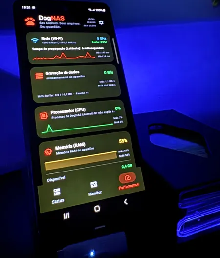
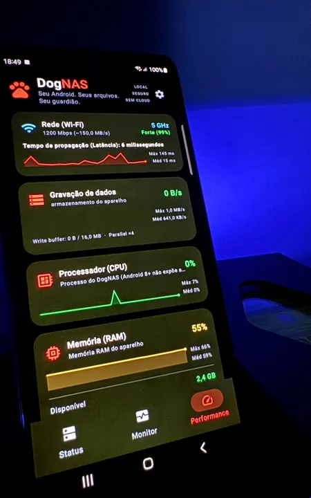
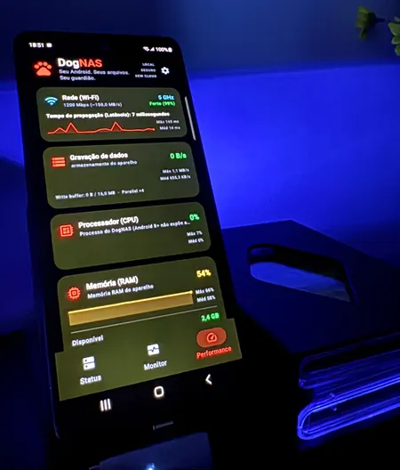
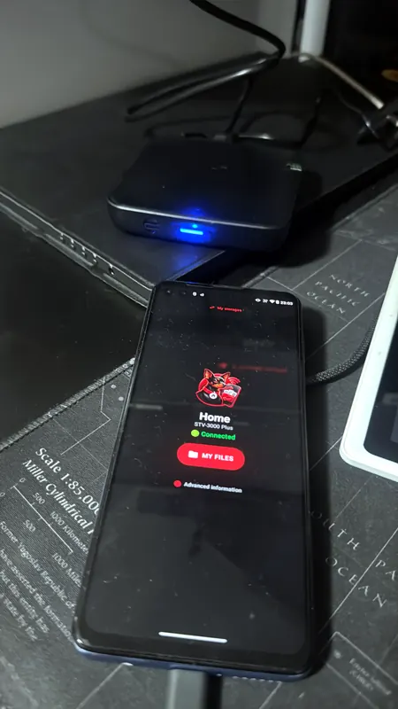
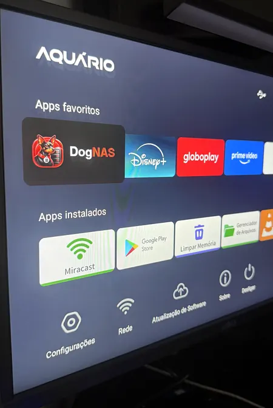
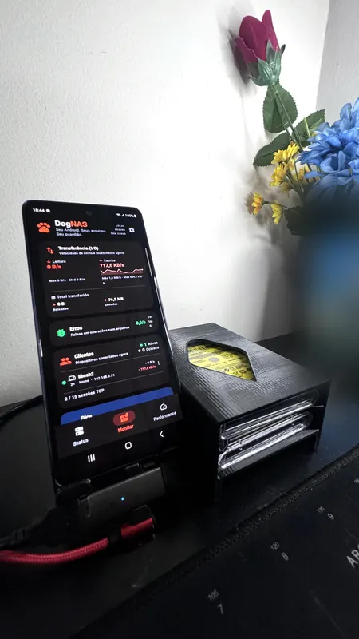
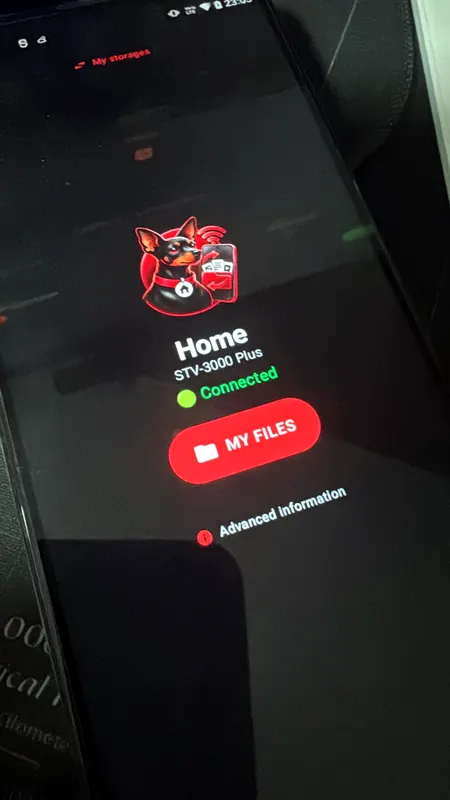
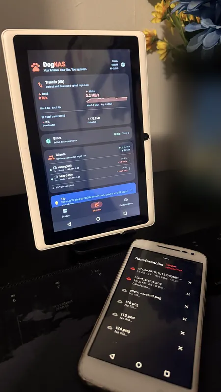
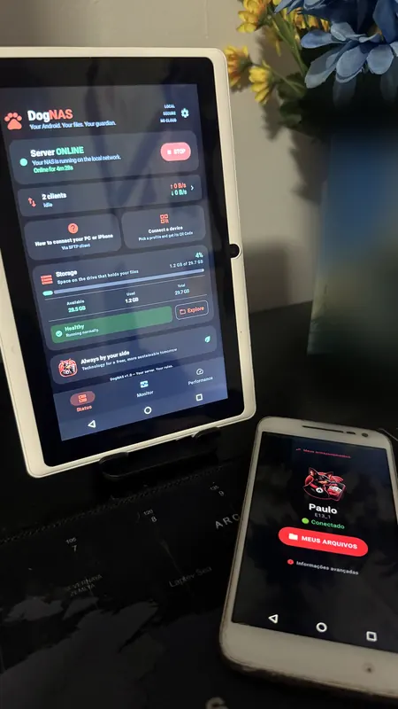
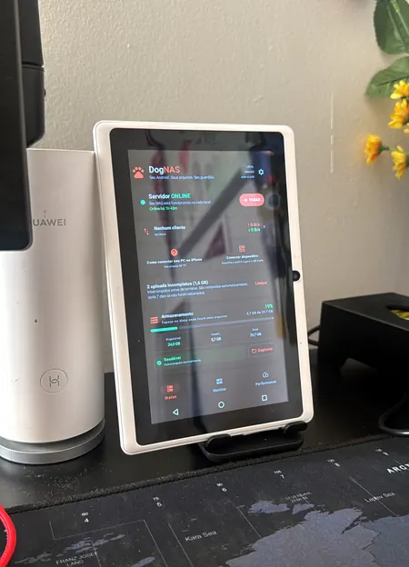

Fotos reais para o blog (validar)

s20fe-dark: A Samsung Galaxy S20 FE running DogNAS, standing on a desk with a blue backlight.
s20fe-closeup: Close-up of the DogNAS server dashboard on a Galaxy S20 FE: Wi-Fi, disk writing, CPU and memory cards.
s20fe-side: The same Galaxy S20 FE seen from a lower angle, showing the Wi-Fi, disk, CPU and memory cards.
tv-box-g100: An Android TV box on a desk with a Moto G100 in front, connected to it with DogNAS Client Lite.
tv-launcher: The Android TV home screen with DogNAS among the favourite apps, on a TV box connected to a TV.
usb-dock-s20fe: A Galaxy S20 FE running DogNAS next to a USB drive dock.
tv-box-client: A Moto G100 showing DogNAS Client Lite connected to an Android TV box, with the "My files" button.
tablet-transfers: An old tablet running the DogNAS server dashboard, with a phone showing a list of files being sent to it.
tablet-server-online: The DogNAS server on an old tablet showing "Server ONLINE", with a phone connected to it in front.
old-tablet: An old white 7-inch Android tablet used as a DogNAS server, next to a Wi-Fi router.